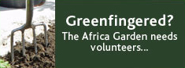

We need volunteers to help look after the Africa Garden throughout the summer so that over 2 million visitors will be able to enjoy learning about African culture and heritage.
If you are interested in volunteering either to look after the plants or to answer visitor’s questions and help them to get the most of the collections, please call one of the following numbers to find out more.

Email the BBC Neighbourhood Gardener Scheme with ‘Africa Garden’ in the subject heading
Volunteering for Visitors
British Museum Volunteers
+ 44 (0)20 7323 8184
kbarnett@thebritishmuseum.ac.uk
|